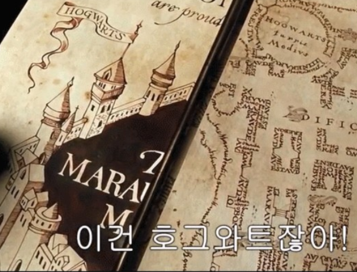
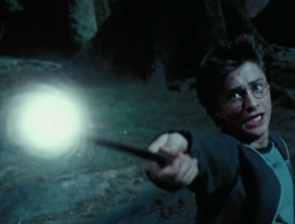
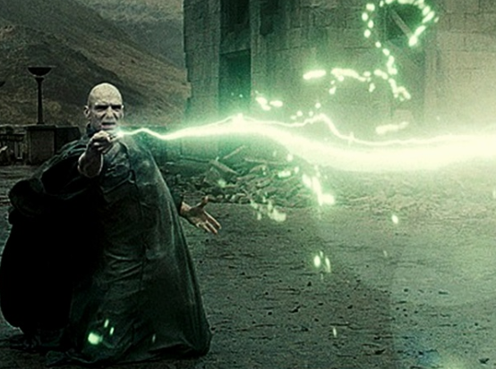

Magic
1. 나는 천하의 멍텅구리임을 엄숙하게 선언합니다(I solemnly swear that I'm up to no good.)

호그와트 비밀지도를 사용할 수 있게 하는 주문. 초기 번역판에서는 '나는 천하의 멍텅구리임을 엄숙하게 선언합니다.'로 번역되었다. 원문은 'I solemnly swear that I'm up to no good'인데 왜 멍텅구리라고 해석했는지는 불명. 아마 '나는 쓸모없다' 식으로 문장을 해석한 것으로 보인다. 최신판에서 개정되었다. 위에 나온 말들은 오역으로 원래는 '나는 나쁜 짓을 할 것임을 엄숙하게 선언합니다' 가 올바른 번역이다. 다만 이는 사실 주문이라기보다는 마법을 발동시키는 암호문에 더 가깝다.
2. 섹튬셈프라(Sectumsempra)
 라틴어 sectus('잘려진')에서 따온 절단 저주. 디핀도의 상위호환. 6권에서 처음 등장하며 해리는 혼혈 왕자의 책에서 이 주문을 발견하게 된다. 지팡이를 휘두른 모양대로 깊은 자상이 생기며 심한 출혈을 일으킨다. 해리는 정확히 어떤 주문인지 모른 채 지팡이를 마구 휘두르며 처음으로 말포이한테 썼다가 하마터면 말포이를 베어 죽일 뻔했다. 6권 막바지에 덮쳐오는 인페리우스들에게도 사용했지만 이미 죽은 시체들이라 베여도 베이는대로 그냥 다가오는 바람에 소용이 없었다.
단순히 베는 게 아니라 절단해버리는 수준으로 절삭력이 강하며, 무엇보다 이 마법에 당한 상처는 치유하기 매우 어렵다. 저 치유장애 효과 탓에 치명적인 저주로 분류되며, 해리가 말포이에게 썼을 때는 스네이프가 노랫가락 같은 매우 복잡한 주문을 읊으며 꽤 시간을 들여 치유했고[54] 7권 이 저주로 조지의 귀가 잘려나갔을 때는[spoiler] 아예 회복 불능이라는 진단을 받았다.[56][57] 디핀도가 생활용 마법인데 비해[58] 섹튬셈프라는 철저한 공격 저주.
강력한 저주지만 스네이프가 만든 마법이란 걸 알고 꺼리게 된 것인지, 해리는 혼혈왕자 편 후반부에서 스네이프에게 날렸다가 막힌 것을 마지막으로 이후로는 전혀 쓰질 않는다.
라틴어 sectus('잘려진')에서 따온 절단 저주. 디핀도의 상위호환. 6권에서 처음 등장하며 해리는 혼혈 왕자의 책에서 이 주문을 발견하게 된다. 지팡이를 휘두른 모양대로 깊은 자상이 생기며 심한 출혈을 일으킨다. 해리는 정확히 어떤 주문인지 모른 채 지팡이를 마구 휘두르며 처음으로 말포이한테 썼다가 하마터면 말포이를 베어 죽일 뻔했다. 6권 막바지에 덮쳐오는 인페리우스들에게도 사용했지만 이미 죽은 시체들이라 베여도 베이는대로 그냥 다가오는 바람에 소용이 없었다.
단순히 베는 게 아니라 절단해버리는 수준으로 절삭력이 강하며, 무엇보다 이 마법에 당한 상처는 치유하기 매우 어렵다. 저 치유장애 효과 탓에 치명적인 저주로 분류되며, 해리가 말포이에게 썼을 때는 스네이프가 노랫가락 같은 매우 복잡한 주문을 읊으며 꽤 시간을 들여 치유했고[54] 7권 이 저주로 조지의 귀가 잘려나갔을 때는[spoiler] 아예 회복 불능이라는 진단을 받았다.[56][57] 디핀도가 생활용 마법인데 비해[58] 섹튬셈프라는 철저한 공격 저주.
강력한 저주지만 스네이프가 만든 마법이란 걸 알고 꺼리게 된 것인지, 해리는 혼혈왕자 편 후반부에서 스네이프에게 날렸다가 막힌 것을 마지막으로 이후로는 전혀 쓰질 않는다.
3. 엑스펠리아르무스(Expelliarmus)
expel(추방하다) + arm(무기). 즉, 무장해제 마법. 지니고 있는 무장(주로 지팡이)이 해제된다.
작중 묘사가 상당히 오락가락하는 편인데, 단순히 상대의 지팡이만 날려보내는 경우가 있는가 하면 상대의 지팡이를 빼앗아 시전자의 손에 쥐어줄 때도 있으며, 아예 기절 마법처럼 묘사되는 경우도 있다.[67] 4권에서 폴리주스를 마시고 무디 교수로 변한 바티 크라우치 주니어가 용서받지 못할 저주를 설명할 때 등장한 설명으로 미루어 보건대 같은 주문이라도 누가 쓰느냐에 따라 효과의 정도가 다른 듯.
해리 포터의 주특기. 이 때문에 죽음의 성물에서는 변장한 해리가 간파당했다. 볼드모트와의 두 대결에서 써먹었으며, 그때마다 엿먹이는 위엄을 보면 어째 통상기인데 해리 한정으로 필살기 느낌이 든다…
이 주문을 최초로 시전한 사람은 세베루스 스네이프. 2권(비밀의 방)에서 처음 사용되며, 2권에서 등장한 가장 유명한 주문이 이것. 2권에서 처음 등장한 이후 해리 포터를 상징하는 마법으로 자리잡았다. 이 마법을 쓰는 것을 보고 죽음을 먹는 자들이 진짜 해리를 구분할 정도. 7권에서는 루핀에게 주력 마법치곤 너무 약한 마법 아니냐는 소리까지 들었지만, 해리는 결국 이 마법으로 볼드모트를 끝장냈다. 해리가 볼드모트의 지팡이였던 딱총나무 지팡이의 주인이었기 때문에 지팡이가 주인을 죽이지 않고 반사된 것. 마법 사용에 지팡이가 필요한 세계관 특성상 이 주문만 잘 쓰면 하면 결투고 뭐고 없을 것 같지만, 프로테고로 간단히 막힐 정도로 막기 쉬운 주문이기 때문에 그런 일은 없는 듯. 게임판 비밀의 방에서는 반사 마법으로 묘사되어 마법사 결투에서 날아오는 공격 주문을 튕겨낼 수 있다.
4. 엑스펙토 패트로눔(Expecto Patronum)

의미는 직역하면 '나는 수호성인을 기다린다' 쯤 된다. 디멘터를 퇴치하는 유일한 수단.디멘터 말고도 여러 적이 나오는 후반부부터는 사용 시 나오는 소환수를 미끼로, 혹은 음성을 담아 메시지를 보내기도 하는 등 다용도로 쓴다.
3권에 처음 등장했으며 설정에 의하면 고등 교육을 거친 마법사도 사용하기 어려운 주문으로 나왔으나, 나중에 가면 웬만한 등장인물들이 심심하면 써대는 주문. 그래도 해리는 이걸 선보여서 OWL 마법 방어술에서 특출함(O)를 받았다.[73] 굳이 변명하면 볼드모트가 디멘터를 잘 쓰는 것으로 유명하기 때문에 미리 대응하는 차원에서 열심히 배웠다고 말할 수는 있을 듯 하다. 또한 고등 마법사 단계에서나 배울 법한 어려운 마법이라는거지 이거 하나 익혔다고 해서 뛰어난 마법사로 볼 수 있는 것은 아니다.
자세한 것은 패트로누스 문서 참조.
타인의 정신을 지배하는 세뇌, 끔찍한 고통을 주는 고문, 목숨을 빼앗는 살인의 세 가지 종류의 저주를 일컫는 명칭.[2] 작중 언급으로는 이 저주는 하나라도 사람에게 적용했을 경우 아즈카반 종신형이다. 사실 현실적인 관점으로 봐도 그럴 만한 게, 세뇌(혹은 협박), 고문, 살인은 모두 흉악범죄다. 다만 아래도 나와있듯 기억력 삭제나 화형은 왜 종신형을 받지 않는지는 다소 의문.